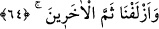
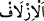
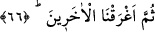

dağlar arasında büyük olduğu için değil, koca dağlar arasında büyük olduğu içindir.”
Böylece her kabîle kendi yoluna girdi.
Kâşifî der ki: “Hemen denizin dibinden bir rüzgâr esti, deniz kurudu ve her bir kavim
bir yoldan denize girdi.” Nitekim Allah Teâlâ: “Onlara denizde kuru bir yol aç.”
(Tâhâ, 20/77) buyurmuştur.
64. Ötekilerini de oraya yaklaştırdık.
“Ötekilerini” Fir’avn ve kavmini “de oraya”denizin yarıldığı yere, yani
İsrâiloğulları’na “yaklaştırdık.” Nihâyet onlar da Mûsâ (a.s.) ve ashabının peşinden
girdikleri yollara girdiler.
Tâcü’l-Masâdır’da der ki: “
” yaklaştırmak ve toplamak demektir. Allah
Teâlâ’nın “
” kavli bu iki mânâ ile de tefsir edilmiştir. Şu kadar var ki birinci
mânâya yorulması daha güzeldir.
65. Musa ve beraberinde bulunanların hepsini kurtardık.
“Musa ve beraberinde bulunanların hepsini” onlar karaya çıkana kadar denizi bu
durumda muhâfaza ederek boğulmaktan “kurtardık.”
66. Sonra ötekilerini suda boğduk.
“Sonra” denizi üzerlerine kapatarak “ötekilerini suda boğduk.” Yâni
İsrailoğulları’nın hepsi denizden çıkınca Mûsâ (a.s.), Fir’avn ve Kıbtîlerin açılan
yollardan girip kendilerine yetişmelerinden korktuğu için denizin kendi haline
dönmesini istiyordu. Ona şöyle fermân-ı ilâhî geldi: Ey Mûsâ “Denizi açık halde”
saflar hâlinde sâkin “bırak. Çünkü onlar” Fir’avn ve kavmi “boğulacak bir
ordudur.” (ed-Duhân, 44/24) Mûsâ (a.s.) da Allah Teâlâ onları suda boğana kadar
denizi olduğu halde bıraktı. Nitekim bu konu başka yerlerde de geçmişti.
Rivâyet edilmiştir ki Musa (a.s.)’ın kurtulup düşmanın boğulduğu gün Muharrem
ayının onuncu Pazartesi günü idi. Musa (a.s.) o nimete şükür olmak üzere o gün oruç